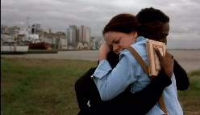

O HOMEM QUE COPIAVA (The Man who copied)
|
(35 mm, 124 min, cor, 2003) André, 20, who works as a photocopier operator at a stationer's, desperately needs thirty-eight reais to impress the girl of his dreams, Silvia, who lives in the building across the street and is a salesgirl in a store selling women's clothes. With the help of his friend Cardoso, and also of his work colleague Marinês, André makes devises several plans to get hold of the money. And they all work. And that is when his troubles begin. |
 |
{kind=link}
about the shoot (set-nov/2001)
Directed by: Jorge Furtado
Executive Producers: Nora Goulart e Luciana Tomasi
Written by: Jorge Furtado
Cinematography: Alex Sernambi
Art Director: Fiapo Barth
Music by: Leo Henkin
Assistant Director: Ana Luiza Azevedo
Production Coordinator: Marco Baioto
Edited by: Giba Assis Brasil
Animations Director: Allan Sieber
A Casa de Cinema PoA Production
Main Cast
Lázaro Ramos (André)
Leandra Leal (Sílvia)
Luana Piovani (Marinês)
Pedro Cardoso (Cardoso)
Carlos Cunha Filho (Antunes)
Júlio Andrade (Feitosa)
Awards
- 25th Festival of New Latin-American Cinema, Havana, CUBA, 2003:
Best Actor (Lázaro Ramos).
- 7th Festival de Cinema Luso Brasileiro, Santa Maria da Feira, PORTUGAL, 2003:
Melhor Filme (Júri Popular), Melhor Filme (Prêmio da Crítica), Melhor Filme (Fed. Cinceclubes).
- 7APCA (Association of Art Critics of São Paulo) Award 2003:
Best Brazilian Film of the Year.
- 8° International Kerala Festival, INDIA, 2003:
Best Director.
- 21° Miami International Film Festival, Miami, EUA, 2004:
Best iberic-american Screenplay.
- 7° Festival Cine Punta Del Este, Uruguai, 2004:
Best Latin-american movie (Critics award), Best Movie (Popular Juri), Honorable Mention by the Oficial Juri.
- 14º Cinequest Film Festival, San Jose, California (EUA), 2004:
"Maverick Spirit Award".
Reviews
"While THE MAN WHO COPIED does not shy away from social critique, it is precisely the opposite of a country which is always seeking sympathy, and which seems to have nothing to show but its own misery. It is, at the same time, a love story, an engaging comedy, and an ode to 'it is better to struggle than to give up'. It is an outstanding film, authentic and clever, which does not upset the expectations created by the filmmaker with his first feature, TWO SUMMERS."
(Helena Teixeira da Silva, Jornal de Notícias, Porto, PORTUGAL, 15/12/2003)
"La primera parte de EL HOMBRE QUE COPIABA deja apreciar una trama intimista que gradualmente, sin contar "grandes cosas", se gana el interés del espectador. Luego, aquel tono reposado acerca de los sueños y esperanzas de un pobre hombre que parece condenado a una vida sin sabores, salta al thriller tejido con argucia, pero con alguna que otra reverencia a la contentura taquillera, es decir, un happy end que no tenía que serlo tanto. Con todo, la película es una gran gozada."
(Rolando Pérez Betancourt, GRANMA, Havana, CUBA, 10/12/2003)
"A lowbudget comedy, (THE MAN WHO COPIED) is possibly the Brazilian film of the current crop which stands (after Carandiru) most chance of getting an international release. Lázaro Ramos, Brazil's hottest new actor, plays the operator of a photocopy machine who ends up involved in a bank heist. It is clever, light-hearted and touching, even if towards the end it becomes a little too screwball for its own good. The characters in the movie, set in the southern city of Porto Alegre, dream of flying to Rio. It's somewhat heartening to learn that its not just Fred, Ginger and Ronnie Biggs who flew to Rio - but that the city is cinematic shorthand even in Brazil itself for freedom, exoticism and glamour."
(Alex Bellos, THE GUARDIAN, Londres, INGLATERRA, 13/10/2003)
"En el Festival de Cine de San Sebastián (...) se exhibió EL HOMBRE QUE COPIABA, del brasileño Jorge Furtado, en la que hay buenas gentes que sueñan con pequeñas, para ellos enormes, ambiciones. Y uno sonríe porque la pizca de locura y los sueños convertidos en realidad le complace."
(Carlos Pumares, LA RAZÓN, Madri, ESPANHA, 21/09/2003)
"There are very few Brazilian movies, I believe, where money - bread, cash, in its most basic reality, in the well-characterized lack of it - is given the role of being almost a character in the story, as is the case of THE MAN WHO COPIED. The film might as well have been called "The Man who Counted", like Malba Tahan's book: the protagonist has to count every penny and spends much of his time (just like any Brazilian filmmaker, by the way) managing his meager budget."
(Marcelo Coelho, Folha de São Paulo, 25/06/2003)
"Everything in this film has its copy, its reflected image, its double. Just like when we go into a movie theatre and identify with a situation happening on the screen, or with a character. But not all these doubles are available to the viewer, as is commonly the case with easily digestible blockbusters. They are often in the shadows, or disguised, waiting for a more watchful eye to catch them. It is a film for all tastes."
(Alessandro Giannini, revista ISTO É GENTE, 16/06/2003)
"Personal drama is just one of the segments that shape the film, which has no qualms about taking inspiration or quoting a varied fauna of artists, from Shakespeare to Xavier de Maistre, from Andy Warhol to Alain Resnais. These inspirations are not manifested in an arrogant manner, as in a certain tradition of 'films d'auteur' that cannot do without the red carpets of international festivals. First and foremost a scriptwriter, Furtado knows how to recycle his literary and audiovisual passions in cinematic language. (...) The work of a craftsman perfected over five years of work, the screenplay elaborates obstacle by obstacle, conflict by conflict - always permeated with humor."
(Ely Azeredo, JORNAL DO BRASIL, Rio de Janeiro, 15/06/2003)
"With fine humor, the filmmaker portrays a generation without any prospects, people who only want to get their life together, to make good money, however they can. It is striking to see the way Furtado acknowledges this ethical stage of Brazilian society, without passing judgment and without a trace of self-righteousness. (...) Quite differently from most recent films, THE MAN WHO COPIED improves as one thinks about it over and over."
(Luis Zanin Oricchio, O ESTADO DE SÃO PAULO, 13/06/2003)
"Furtado continues to bet on humor, on the protagonist's voice-over narration, in his local southern Brazilian locations (out goes the beach, in comes the city) and on references to Shakespeare. However, instead of using a linear structure, the filmmaker embarks on a narrative experiment, exercises in meta-language and the hypertext style that characterized his shorts, such as the award winning ISLAND OF FLOWERS. (...) Much of the pleasure of watching this collage of genres and quotes lies in piecing together the memory puzzle proposed by Furtado. And the viewer should not expect any moralistic messages or realism - THE MAN WHO COPIED is great fantasy."
(Ticiano Osório, ZERO HORA, Porto Alegre, 13/06/2003)
"The director has in his favor a very fortunate choice of cast, starting with the excellent Ramos and Leandra. But the essential factor in the quality of this film is none other than Furtado himself. (...) He is part of a trend that is finally getting consolidated in the country, filmmakers who recognize the crucial importance of the screenplay. Furtado worked on THE MAND WHO COPIED for about five years. In the first year, he says that all he did was write the narration that guides the film, inspired in the narration of modern classics like The Catcher in the Rye, Portnoy's Complaint and Slaughterhouse 5. The director has no qualms about citing these and dozens of other references deliberately included in the story. He starts with a collage, but arrives at an original: a film that is nothing like any other film."
(Isabela Boscov, VEJA, 11/06/2003)
13/06/2003